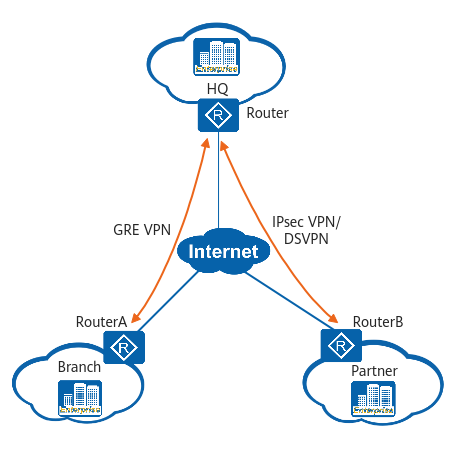

VPN Access
In Figure 1, the Router connects the enterprise HQ to the Internet, while RouterA and RouterB connect LANs of a branch and a partner, respectively, to the Internet. As gateways at the enterprise HQ and branches, ARs provide a range of secure access functions to allow internal information access for the HQ, branches, and partners.
The Router can set up Virtual Private Network (VPN) tunnels — Generic Routing Encapsulation (GRE) VPN, Internet Protocol Security (IPsec) VPN, and Dynamic Smart VPN (DSVPN) tunnels — between the HQ and branches to secure data transmission. Fast tunnel set-up and authentication are also supported for branches.
Figure 1 VPN access